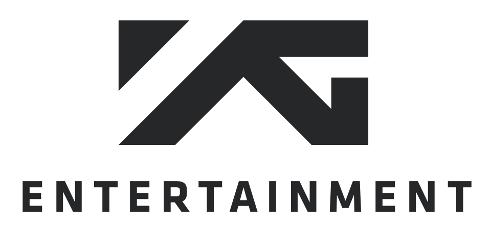
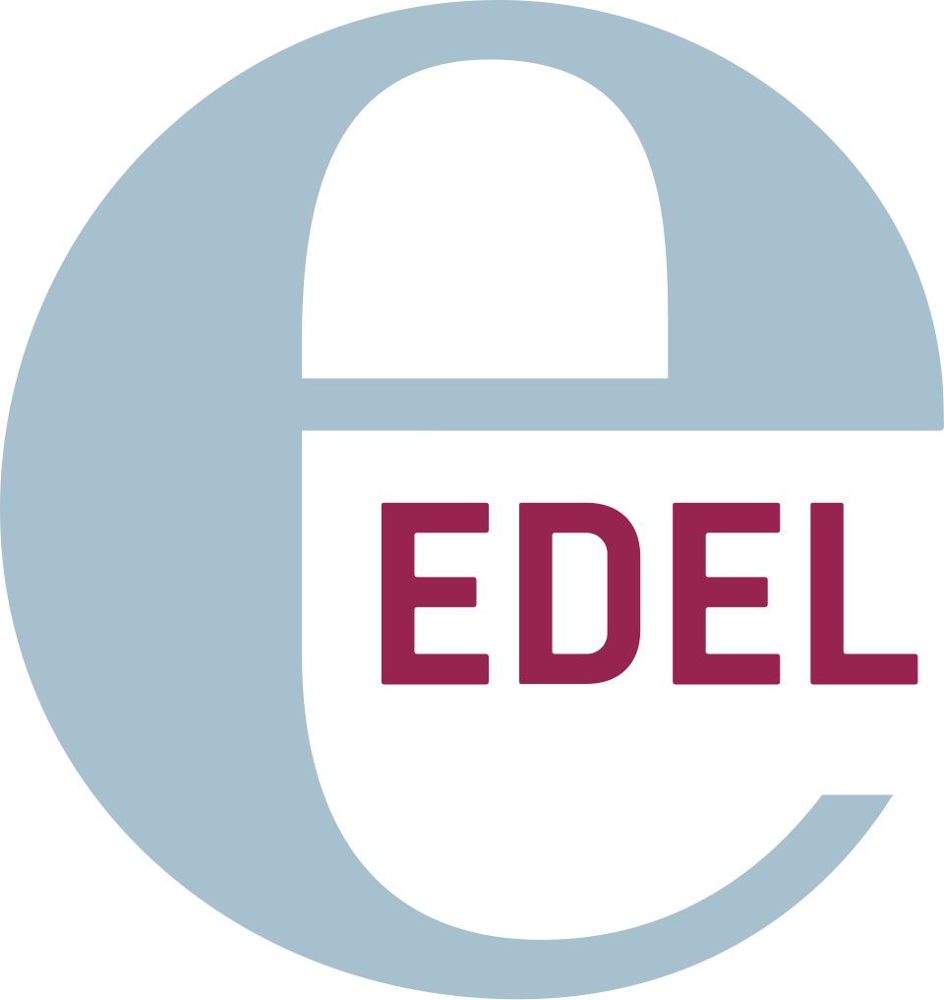

홈 > 브랜드 매거진 > YG 엔터테인먼트
YG 엔터테인먼트
YG엔터테인먼트는 양현석이 1996년 설립한 대한민국의 종합 엔터테인먼트 기업이다. 빅뱅·블랙핑크·트레저 등을 배출하며 음악성과 개성 있는 아티스트로 'YG Family'를 구축했다.
산업 분야 미디어·엔터테인먼트 · 공개 등급 디렉토리 · 브랜드 평가 4.2 ★

한눈에 보는 브랜드
YG엔터테인먼트는 양현석이 1996년 설립한 대한민국의 종합 엔터테인먼트 기업이다. 빅뱅·블랙핑크·트레저 등을 배출하며 음악성과 개성 있는 아티스트로 'YG Family'를 구축했다.
브랜드 관점
YG엔터테인먼트는 힙합·개성 중심의 색채로 차별화한 대형 기획사로, 글로벌 걸그룹 블랙핑크의 성공이 상징적이다. 설립·운영 주체, 핵심 제품, 시장 포지션을 함께 보면 미디어·엔터테인먼트 안에서의 위치가 또렷해진다.
시작과 성장
YG 엔터테인먼트는 1995년 설립된 한국 엔터테인먼트 기업입니다.
브랜드 아이덴티티
YG 엔터테인먼트의 정체성은 힙합 기반 음악 색채, 아티스트 개성, 글로벌 팬덤 콘텐츠에서 형성됩니다.
확장 지식
서울 합정동에 기반하며 빅뱅·블랙핑크·트레저·베이비몬스터 등 'YG Family'를 구축했다.
제품과 서비스
아티스트 매니지먼트, 음반·음원 제작, 콘서트·MD 사업을 전개한다. 빅뱅·블랙핑크·트레저·베이비몬스터·악동뮤지션 등이 대표 아티스트다.
사람들
창업자는 서태지와 아이들 출신 양현석이다. 사명 'YG'는 그의 별칭 '양군'에서 유래했다.
현재 상태
타임라인
BI/CI 변천사
함께 읽을 브랜드
 미디어·엔터테인먼트 · 디렉토리SM 엔터테인먼트
미디어·엔터테인먼트 · 디렉토리SM 엔터테인먼트SM엔터테인먼트는 이수만이 1995년 설립한 대한민국의 종합 엔터테인먼트 기업이다. K-pop 아티스트 매니지먼트와 음반 기획·제작을 핵심으로, aespa·NCT·S...

미디어·엔터테인먼트 · 디렉토리Edel Records에델(Edel SE)은 1986년 미하엘 핸트예스가 독일 함부르크에서 설립한 음악·미디어 기업이다. 독립 음반 레이블·퍼블리싱·유통을 아우르며 인디 아티스트와 소형...
 미디어·엔터테인먼트 · 디렉토리큐브엔터테인먼트
미디어·엔터테인먼트 · 디렉토리큐브엔터테인먼트큐브엔터테인먼트는 홍승성·신정화가 2006년 설립한 대한민국의 엔터테인먼트 기업이다. 설립 당시 사명은 플레이큐브였으며 2011년 현 사명으로 바꿨고, (여자)아이들...
0E
0711 엔터테인먼트
미디어·엔터테인먼트 · 디렉토리0711 엔터테인먼트0711 엔터테인먼트는 독일의 미디어·엔터테인먼트 브랜드로, 콘텐츠 포맷, 팬덤, 채널 운영, 지식재산권 확장이 함께 작동하는 영역입니다.
미디어·엔터테인먼트 · 디렉토리Volcano Entertainment볼케이노 엔터테인먼트(Volcano Entertainment)는 1996년 미국에서 설립되어 툴(Tool) 등을 발매한 록 중심의 음반 레이블이다.
 미디어·엔터테인먼트 · 자료 기반카카오엔터테인먼트
미디어·엔터테인먼트 · 자료 기반카카오엔터테인먼트카카오엔터테인먼트(Kakao Entertainment)는 카카오 산하의 콘텐츠 기업으로, 2021년 카카오페이지와 카카오M의 합병으로 출범했다.
 미디어·엔터테인먼트 · 자료 기반컴투스
미디어·엔터테인먼트 · 자료 기반컴투스컴투스(Com2uS)는 1998년 설립된 한국의 모바일 게임 기업으로, 서머너즈워(Summoners War)로 잘 알려져 있다.
10
105music
미디어·엔터테인먼트 · 디렉토리105music105music는 독일의 미디어·엔터테인먼트 브랜드로, 콘텐츠 포맷, 팬덤, 채널 운영, 지식재산권 확장이 함께 작동하는 영역입니다.